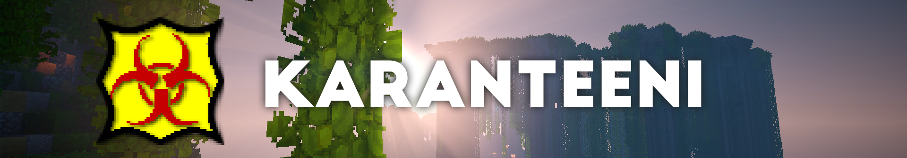
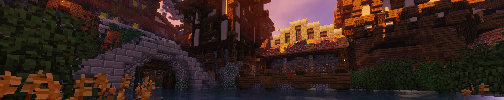
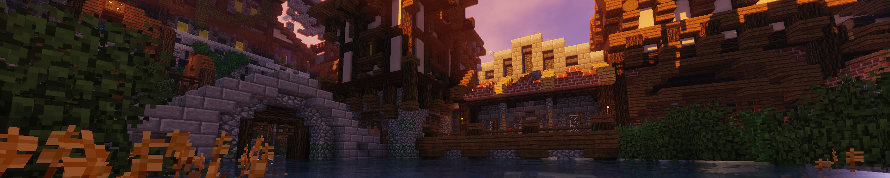
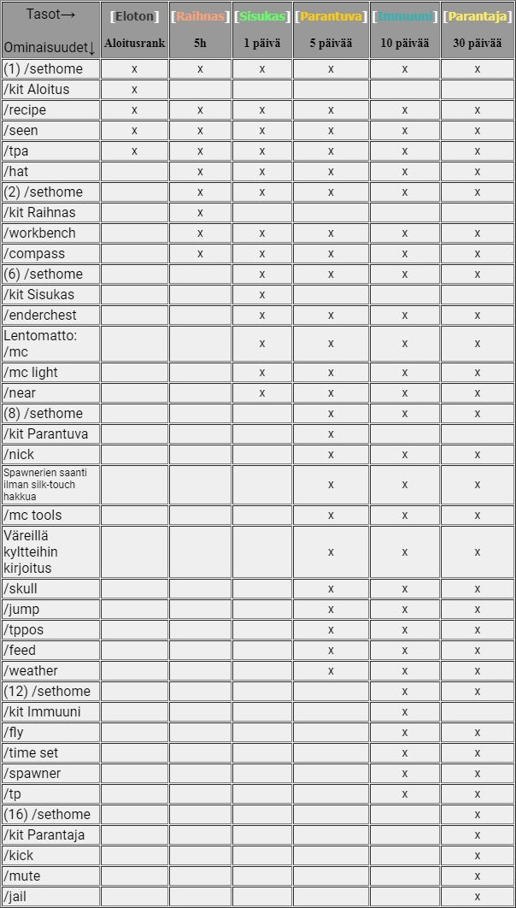
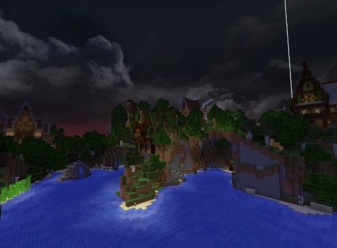
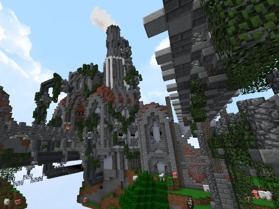
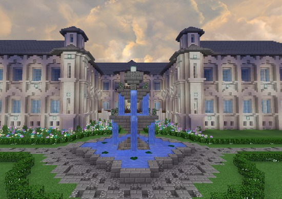
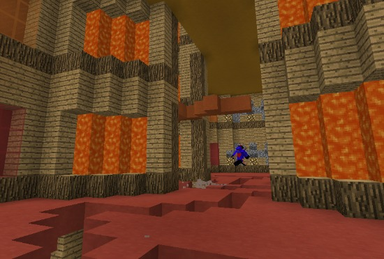

Etusivu
Ylläpito
Tasot
Maailmat
KK:n pelaaja
Säännöt
Äänestä
Lahjoita
Estot
Vieraskirja
Karanteeni on suomalainen Minecraft- palvelin, jossa pelataan Survival ja Creative pelimuotoja.
karanteeni.tk
tai 151.80.78.212:28373
Karanteeni on perustettu 10.6.2016 ja sen omistaa Jomeee ja Nuubles.
Palvelimen toimintaidea on se, että mitä pidempään pelaat serverillä, sitä parempia ominaisuuksia saat käyttöösi. Näistä ominaisuuksista pääset lukemaan lisää täällä. Palvelimelta et saa ostettua mitään etuja, kuten lentoa rahalla, koska se rikkoisi Minecraftin kehittäjän Mojangin EULA:aa (sääntöjä). Tämä palvelin on siis täysin omakustanteinen. Halutessasi voit kuitenkin tukea toimintaa lahjoittamalla.

...
IPkaranteeni.tk
tai 151.80.78.212:28373
Karanteeni on perustettu 10.6.2016 ja sen omistaa Jomeee ja Nuubles.
Palvelimen toimintaidea on se, että mitä pidempään pelaat serverillä, sitä parempia ominaisuuksia saat käyttöösi. Näistä ominaisuuksista pääset lukemaan lisää täällä. Palvelimelta et saa ostettua mitään etuja, kuten lentoa rahalla, koska se rikkoisi Minecraftin kehittäjän Mojangin EULA:aa (sääntöjä). Tämä palvelin on siis täysin omakustanteinen. Halutessasi voit kuitenkin tukea toimintaa lahjoittamalla.

Omistajat
| Kaverukset Jomeee, Emmazki ja Nuubles perustivat yhdessä ensimmäisen oman serverinsä, Karanteenin 10.6.2016. Jome hoitaa pääasiassa conffauksen ja Nuubles on spesialisti, eli ongelma kun ongelma ratkeaa Nuublesin käsittelyssä aina (hänen käsialaansa on myös serverin banneri ja logo). Tarpeen tullen kummatkin kyllä osaavat myös hoitaa toistensa hommia. Ja mistään epäaktiivisesta sakista ei ole kyse, meihin törmäät varmasti usein! |
Adminit
 |
Ougii_Lewe oli alunperin mukana Karanteenin ylläpidossa rakentajana, mutta päätti kuitenkin vetäytyä hommista motivaation puutteen vuoksi. Yhteistä menneisyyttä Lewellä ja Karanteenin muulla ylläpidolla on kuitenkin jo muutamalta aiemmalta serveriltä. Vanhat ystävät ovat kuitenkin aina tervetulleita takaisin perheeseen, joten tälläkertaa Lewe on kuvioissa mukana adminina. Minecraft on ollut osana Lewen elämää jo vuodesta 2010. Huh! |
 |
Whimsy85 on serverin tuorein ylläpitäjä. Kokemusta hänelle on kertynyt muutamista servereistä ja päätimme siksi napata hänet ylläpitojunaan mukaan! Kokemusta pelistä on kertynyt Whimsylle jo vuodesta 2014 |
 |
Viuwi on palkattu riveihimme, jotta letkuhousut(ja joskus naamat) eivät täysin valtaisi alaa. Viuwi oli pelaajana Karanteenissa kyllä hyvän aikaa ennenkuin päätimme napata hänet ylläpitojunan kyytiin. Monen muun ylläpitolaisen tapaan myöskään viuwilla ei ollut aiempaa kokemusta tehtävistä, mutta nopean oppimisen taito on sitä tärkeämpää. Minecraftia viuwi on pelannut vuodesta 2013. |
 |
LouNiiii ryöstettiin ylläpitoon, koska näimme hänessä valtavaa potentiaalia. Hän sopeutui veikeään joukkoomme hyvin ja adminin rooli on jo täysin hallussa. Minecraftia Louni on hakannut jo vuodesta 2012-2013. |
Rakentajat
 |
PreGauris on rakentajien jumala. Ei ole mitään mitä hän ei osaisi rakentaa. Lobby on kokonaan PreGauriksen rakentama. Persoonaltaan tämä luovuuden perikuva on salaperäinen, eikä häneltä irronnut myöskään tietoa siitä milloin hän on alkanut pelaamaan minecraftia. Hmm... |
 |
lakanakana on yksi serverin ahkerimmista rakentajista, jonka käsissä vaikeatkin projektit taipuvat helposti! Minecraftin kana aloitti jo vanhoina beta-aikoina! |
 |
Wiikin on serverin uusin tulokas. Taitoa hänelle on kertynyt jo parista serveristä. Mineä Wiikin on paukuttanut jo vuodesta 2013 asti! |
Kiitos
 |
Kiitos ZD0 tämän verkkosivuston koodaamisesta, joka vaivautui kirjoittamaan käsin yli 1500 riviä koodia! Myös sen lisäksi kiitokset monesta muusta teknisen puolen sähläämisestä, kuten verkkotunnuksen määrittämisestä. |
Tasot
Serverillämme on kuusi peliaikaan perustuvaa tasoa eli rankkia. Joka tasolla saat käyttöösi parempia ominaisuuksia. Pääset uudelle tasolle automaattisesti, kun olet pelannut serverillä uuteen tasoon tarvittavan ajan. AFK-ajalta eli poissaolosta ei kerry peliaikaa. Näet peliaikasi komennolla /ar time. Peliaika päivittyy 10 minuutin välein.Serverillä on tavallisten rankkien lisäksi tasot Lojaali ja Youtube. Lojaalit pelaajat olivat edellisellä serverillämme vippejä, joten heidän aikoinaan ostamat ominaisuudet siirtyivät tänne rankille Lojaali. Nyt, kun vippien (joihin sisältyy fly, tai muita vastaavia etuja) myyminen on kiellettyä Minecraftin eulassa, olemme siirtyneet serveriin, missä hyvät ominaisuudet tulevat peliajan mukaan. Youtube-rankin saavat henkilöt, joiden kanavalla on vähintään 50 tilaajaa ja jotka tekevät hyvän esittelyvideon Karanteenista. Rankkiin käy myös aktiivinen videosarja palvelimelta. Rankin mukana tulee /kit Youtube, mutta muuten hyvät ominaisuudet tulee tavallisten tasojen tapaan pelaamalla.
Tässä on taulukko, josta näet mitä ominaisuuksia kuuluu mihinkin tasoon. Jokaisen tason mukana tulee myös uusi kit eli tavarapakki, jonka saat komennolla /kit (tason nimi). Vasemmalla ensimmäisessä sarakkeessa on ominaisuus ja jos tason kohdalla on raksi kyseisen ominaisuuden kohdalla, silloin se kuuluu siihen tasoon. Jos et tiedä mitä joku komento tekee, kysy rohkeasti ylläpidolta!
Avaa taulukko uudessa välilehdessä tarkempana

Serverillämme on tällä hetkellä kaikenkaikkiaan neljä eri maailmaa joista jokaisessa on oma viehätyksensä. Takaamme sinulle sen, että tekeminen ei tule koskaan loppumaan kesken! Voit vaihtaa maailmasta toiseen koska vain haluat, mutta jokaisessa maailmassa sinulla on eri tavarat.
Survival on Karanteenin pääpelimuoto. Sitä pelataan kaikista eniten. Survivalissa et voi tappaa muita pelaajia, tuli ei leviä, creepperit eivät tee tuhoa maastoon mutta satuttavat pelaajia ja tnt räjähtää. Survival on kuitenkin hieman parempaa Karanteenissa kuin normaalisti erikoisten lisäosien eli pluginien vuoksi. Niistä voit kysyä lisää ylläpidolta.
Skyblock maailmaan pääset komennolla /warp skyblock. Tekemällä /saari saat ikioman saaren, jossa voit pelata normisurvivalia rajoitetuilla resursseilla. Skyblockin spawnin kyläläiskauppialta voit ostaa tavaraa.
Creativeen pääset komennolla /warp creative. Creativemaailmamme on toteutettu Plot-idealla, eli voit claimata oman plotin niin, että seisot alueella mitä kukaan ei ole ottanut omakseen ja teet /plot claim. Sitten voit rakentaa sinne mitä ikinä haluat! Voit käyttää sitä myös idea-alustana, eli jos sinulla on mielessä jokin rakennus minkä haluaisit survivaliin rakentaa, niin voit hahmotella sitä ensin creativessa ennen kuin lähdet toteuttamaan. Voit myös kierrellä katsomassa muiden luomuksia ja ehkä hakea inspiraatiota.
Tällä hetkellä serverillämme on ainoastaan palikkasade-minipeli, jota pääset pelaamaan lobbyn kautta. Pelin ideana on juosta, koska sinun yläpuoleltasi tippuu palikoita maahan. Pelin kesto vaihtelee muutamasta kymmenestä sekunnista muutamaan minuuttiin.
Survival
Survival on Karanteenin pääpelimuoto. Sitä pelataan kaikista eniten. Survivalissa et voi tappaa muita pelaajia, tuli ei leviä, creepperit eivät tee tuhoa maastoon mutta satuttavat pelaajia ja tnt räjähtää. Survival on kuitenkin hieman parempaa Karanteenissa kuin normaalisti erikoisten lisäosien eli pluginien vuoksi. Niistä voit kysyä lisää ylläpidolta.
Skyblock
Skyblock maailmaan pääset komennolla /warp skyblock. Tekemällä /saari saat ikioman saaren, jossa voit pelata normisurvivalia rajoitetuilla resursseilla. Skyblockin spawnin kyläläiskauppialta voit ostaa tavaraa.
Creative
Creativeen pääset komennolla /warp creative. Creativemaailmamme on toteutettu Plot-idealla, eli voit claimata oman plotin niin, että seisot alueella mitä kukaan ei ole ottanut omakseen ja teet /plot claim. Sitten voit rakentaa sinne mitä ikinä haluat! Voit käyttää sitä myös idea-alustana, eli jos sinulla on mielessä jokin rakennus minkä haluaisit survivaliin rakentaa, niin voit hahmotella sitä ensin creativessa ennen kuin lähdet toteuttamaan. Voit myös kierrellä katsomassa muiden luomuksia ja ehkä hakea inspiraatiota.
Minipelit
Tällä hetkellä serverillämme on ainoastaan palikkasade-minipeli, jota pääset pelaamaan lobbyn kautta. Pelin ideana on juosta, koska sinun yläpuoleltasi tippuu palikoita maahan. Pelin kesto vaihtelee muutamasta kymmenestä sekunnista muutamaan minuuttiin.
Kuukauden pelaaja
Emme kuitenkaan jaksa sitä tänne tunkea, kattokaa survivalin spawnilta.
Kuukauden pelaaja valitaan joka kuukauden ensimmäisinä päivinä, mikäli sopiva pelaaja kyseiselle tittelille löytyy. Eli uutta kuukauden pelaajaa ei välttämättä valita joka kuukausi. Kuukauden pelaaja saa kertakäyttöisen kitin /kit kkpelaaja. Aiemmin kuukauden pelaajana ollut voidaan valita uudelleen, mutta ei kahtena kuukautena peräkkäin.
Kuukauden pelaajaksi pääsee, mikäli suurin osa näistä allaolevista kriteereistä täyttyy
- Aktiivinen (tasoltaan vähintään Raihnas)
- Noudattaa sääntöjä eikä kyseenalaista niitä
- On reilu ja ystävällinen muita kohtaan
- Auttaa uusia (miksei vanhojakin) pelaajia esimerkiksi tarjoamalla heille majapaikkaa tai peliseuraa ja antaa resursseja joilla päästä alkuun
- Mainostaa serveriä hyväksyttävillä keinoilla (tekee esittelyvideon serveristä tms, levittää tietoa serveristä erilaisilla foorumeilla, kertoo kavereilleen jne. Eli ei niin että mennään esimerkiksi toisille servereille mainostamaan, se antaa vain huonon kuvan meistä!)
- Toivottaa uudet pelaajat tervetulleiksi
- Auttaa ylläpitoa (ei kuitenkaan liikaa sillä tavalla, että se alkaa jo ärsyttämään)
- Ei mahtaile paremmuudellaan (eli on tasavertainen muiden kanssa)
Tämä kategoria sisältää serverin (survivalin) säännöt. Hieman alempaa löydät ohjeet erilaisiin komentoihin ja serverin käytäntöihin.
Säännöt eivät ole minkäänlaisessa tärkeysjärjestyksessä.
Chatissamme on käytössä hymiöt. Saat niitä helposti laitettua alla olevan taulukon avulla. Eli jos haluat esimerkiksi laittaa tähtihymiön (★), kirjoita chattiin *star.
Säännöt eivät ole minkäänlaisessa tärkeysjärjestyksessä.
- Huijausohjelmien (X-ray jne.) käyttö kielletty
- Chatti pidetään siistinä, ollaan ystäviä toinen toisellemme
- Ei toisten talojen sabotointia eikä varastamista. Ei vaikka aluetta ei oltaisi suojattu/arkkuja lukittu
- Toiset pelaajat, jotka ovat alempana omaa tasoasi, eivät saa hyötyä sinun tasostasi. Eli jos saat oman tasosi pakista vaikkapa timanttia, et saa antaa sitä alemmalla tasolla olevalle kaverillesi
- Älä rakenna:
Pelaaja-ansoja, serveriä lagittavia- esim. ikuisuuksiin käyviä punakivi-laitteita, suuria/korkeita hökötyksiä jotka eivät sovi maisemaan tai afk koneita - NPC-kylät ovat rauhoitettuja, niistä saat ainoastaan ottaa kamat arkuista ja pelloilta viljelmiä JOS istutat takaisin. Kylän saa ottaa kodikseen, silloin NPC-kyläsääntöjä saa rikkoa.
- Ethän afkaa mobfarmilla (aiheuttaa valtavaa lagia)
- Istuta hakkaamiesi puiden tilalle uusia taimia
- Älä kinua tavaraa tai rankkia äläkä mainosta
- Rakenna talosi kauas spawnista
- Et saa käyttää lentämistä uusien alueiden etsimiseen, koska se hidastaa serveriä valtavasti, käytä mielummin taikamattoa jos pakko
- Olet velvoitettu kertomaan sääntöjen rikkojista jos havaitset sellasia. Jos voit, ota todisteeksi screenshot (F2) ja välitä se ylläpidolle
- Serverin ylläpito on ystävällistä, ole sinäkin heille! :)
Ohjeet
- Serverimme rahavaluutta on pennit (❂)
- Serverillämme voit tällä hetkellä pelata survivalia, creativea sekä tntrunia
- Arkut ovat automaattisesti lukossa kun laitat ne paikoilleen. Jos haluat, että kaikki voivat avata sen, tee komento /avaa ja lyö arkkua.
- Ovet eivät ole automaattisesti lukossa kun laitat ne, mutta voit lukita ne komennolla /lock ja lyö ovea. Edellä mainittu /cmodify -komento käy myös oviin, kun haluat, että kaverisi pääsee taloosi
- Ovia ei tarvitse erikseen lukita, mikäli alueesi on suojattu, mutta esimerkiksi kylässä asuessasi ovien lukituksesta voi olla hyötyä
- Voit pyytää talollesi/alueellesi suojausta ylläpidolta. Kun alue on suojattu, kukaan muu ei pysty rikkomaan mitään tai tulemaan ovesta sisälle. Jos asut samalla alueella jonkun toisen kanssa, muistathan mainita suojausta pyytäessäsi sen, niin kaverisi saa suojaukseen oikeudet
- Voit istua kirjoittamalla chattiin /sit ja maata kirjoittamalla chattiin /lay
Chatissamme on käytössä hymiöt. Saat niitä helposti laitettua alla olevan taulukon avulla. Eli jos haluat esimerkiksi laittaa tähtihymiön (★), kirjoita chattiin *star.
| Nimi | Hymiö | Kirjoitusasu |
|---|---|---|
| Sydän | <3 | |
| Miespuolinen | *male | |
| Naispuolinen | *female | |
| Nuotit | ♪♫♫♪ | *music |
| Check | *check | |
| Rasti | *x | |
| Copyright | © | *copy |
| Rekisteröity | ® | *reg |
| Tiimalasi | *waiting | |
| Tähti | ★ | *star |
| Puhelin | *phone | |
| YingYang | *yingyang | |
| Pääkallo | *skull | |
| Radioaktiivinen | *radioactive | |
| Tartuntavaara | *bio | |
| Lentokone | *airplane | |
| Kirjekuori | *envelop | |
| Nuoli | ➸ | *arrow |
| Armeijatähti | ✪ | *armystar |
| Sakset | ✁ | *scissors |
| Rauhan merkki | *peace | |
| Pistekuvio | ░ | *shade |
| Pistekuvio 2 | ▒ | *medium |
| Pistekuvio 3 | ▓ | *dark |
| Laatikko | ☐ | *box |
| Merkattu | *cbox | |
| Rastittu | ☒ | *markedbox |
| Kolmio | ▲ | *triangle |
| Neliö | ■ | *square |
| Ympyrä | ○ | *circle |
| Japanilainen merkki | ツ | -_* |
| Aurinko | ☼ | *sun |
| Aurinko 2 | *asun | |
| Kuu | ☾ | *moon |
| Kuu 2 | ☽ | *amoon |
| Pilvi | *clouds | |
| Lumiukko | *snowman | |
| Sateenvarjo | *umbrella | |
| Kukka | ✿ | *flower |
| Kukka 2 | ❀ | *aflower |
| Komeetta | *comet | |
| Salama | ϟ | *zap |
| Lumihiutale | ❅ | *snowflake |
| Valkoinen sydän | ♡ | *heart |
| Pata (pelikorttimerkki) | ♤ | *spade |
| Ruutu (pelikorttimerkki) | ♢ | *diamond |
| Risti (pelikorttimerkki) | ♧ | *club |
| Musta sydän | ♥ | *bheart |
| Musta pata | ♠ | *bspade |
| Musta ruutu | ♦ | *bdiamond |
| Musta risti | ♣ | *bclub |
| Nuoli vasemmalle | ← | *left |
| Nuoli oikealle | → | *right |
| Nuoli ylös | ↑ | *up |
| Nuoli alas | ↓ | *down |
| Kakoisnuoli oikealle | » | *>> |
| Kaksoisnuoli vasemmalle | « | *<< |
| -||- | ⟫ | *b>> |
| -||- | ⟪ | *b<< |
| Kuninkaan kruunu | ♔ | *king |
| Kuningattaren kruunu | ♕ | *queen |
| Torni (shakkinappula) | ♖ | *rook |
| Lähetti (shakkinappula) | ♗ | *bishop |
| Ratsu (shakkinappuna) | ♘ | *knight |
| Sotila (shakkinappula) | ♙ | *pawn |
| Musta kuninkaan kruunu | ♚ | *bking |
| Musta kuningattaren kruunu | ♛ | *bqueen |
| Musta torni | ♜ | *brook |
| Musta lähetti | ♝ | *bbishop |
| Musta ratsu | ♞ | *bknight |
| Musta sotilas | ♟ | *bpawn |
| Oinas | *ram | |
| Härkä | *bull | |
| Kaksoset | *twins | |
| Rapu | *crab | |
| Leijona | *lion | |
| Neitsyt | *maiden | |
| Vaaka | *scale | |
| Skorpioni | *scorpion | |
| Jousimies | *archer | |
| Kauris | *mergoat | |
| Vesimies | ♒ | *waterbearer |
| Kalat | ♓ | *fish |
Serverin äänestäminen on ehdottoman tärkeää, sillä mitä enemmän serveriä äänestetään, sitä enemmän näkyvyyttä se saa. Mikään serveri ei pysy toiminnassa kauaa, jos siellä ei kukaan pelaa. Siitä syystä toivomme, että antaisit oman panoksesi serverin toiminnan jatkumiseen äänestämällä joka päivä. Äänestäminen vie vain 10 sekuntia ja saat siitä vastalahjaksi automaattisesti 100 penniä.
Äänestyslinnki 1: TopG
Äänestyslinkki 2: Minecraft-MP
Äänestyslinnki 1: TopG
Äänestyslinkki 2: Minecraft-MP
27.1.18 Amatoori05PvP lahjoitti 10€ ♥ 27.1.18 Moderaattori lahjoitti 10€ ♥ 23.1.18 Ixynas lahjoitti 10€ ♥ 13.12.17 RetuPoika lahjoitti 50€ ♥ 13.12.17 Louniiii lahjoitti 25€ ♥ 29.10.17 Kirje lahjoitti 10€ ♥ 5.7.17 Whimsy85 lahjoitti 60€ ♥ 13.5.17 moraani lahjoitti 6€ ♥ 12.2.17 Svampy lahjoitti 10€ ♥ 7.2.17 Thaum_Master lahjoitti 10€ ♥ 10.1.17 Salamatunturi lahjoitti 25€ ♥ 9.1.17 Salamatunturi lahjoitti 25€ ♥ 27.11.16 ede500 lahjoitti 10€ ♥ 23.10.16 Koire lahjoitti 10€ ♥ 24.10.16 Jopotti lahjoitti 5€ ♥ 20.7.16 Jopotti lahjoitti 6,42€ ♥
Koska serveri maksetaan täysin omilla rahoilla, pienetkin lahjoitukset ovat erittäin tervetulleita. Jos haluaisit lahjoittaa, lähetä meille sähköpostia osoitteeseen mckaranteeni@gmail.com, niin katsotaan kuinka voit sen tehdä. Parhaat tavat ovat paysafecard ja paypal.
Mitä saan lahjoituksesta?
Minecraftin EULA ei kiellä visuaalisten erikoisuuksien antamista pelaajille vastineeksi rahasta, joten vähintään 10 euron lahjoituksen tekevät saavat...- käyttää serverin chatissa lempinimeä (/nick)
- käyttöönsä /trails komennon, jolla saa erilaisia partikkeleja ympärilleen
- oikeuden kirjoittaa kyltteihin väreillä
Hae eston purkua
Vieraskirja
Voit kommntoida vieraana kirjoittamalla nimesi Nimi- kenttään ja ruksittamalla Kommentoin mieluummin vieraana.